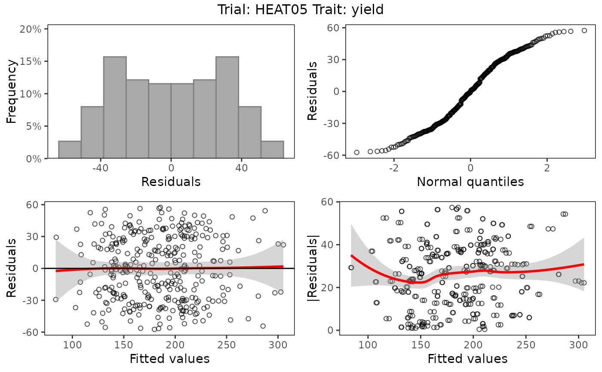

Perform REML analysis given a specific experimental design using either SpATS, lme4 or asreml. SpATS is used as a default method when row coordinates (rowCoord) and column coordinates (colCoord) are present, lme4 otherwise. See details for the exact models fitted.
Arguments
- TD
An object of class
TD.- trials
A character vector specifying the trials for which the models should be fitted.
- design
A character string specifying the experimental design. Either "ibd" (incomplete block design), "res.ibd" (resolvable incomplete block design), "rcbd" (randomized complete block design), "rowcol" (row column design) or "res.rowcol" (resolvable row column design). Can be ignored when the trial design is specified in the meta data (see
setMeta).- traits
A character vector specifying the traits for which the models should be fitted.
- what
A character vector specifying whether "genotype" should be fitted as fixed or random effect. If not specified, both models are fitted.
- covariates
A character vector specifying covariates to be fitted as extra fixed effects in the model.
- useCheckId
Should checkId be used as a fixed effect in the model?
IfTRUE,TDhas to contain a column 'checkId'. Using checkId as fixed effect can only be done when genotype is fitted as a random effect in the model.- spatial
Should spatial models be tried? Spatial models can only be fitted with SpATS and asreml. If SpATS is used for modeling, only spatial models can be fitted and spatial is always set to
TRUE. If asreml is used, fitting spatial models is optional.- engine
A character string specifying the name of the mixed modeling engine to use, either "SpATS", "lme4" or "asreml." For spatial models, "SpaTS" is used as default, for other models "lme4".
- control
An optional list with control parameters to be passed to the actual fitting functions. Currently
nSegandnestDivare valid parameters when fitting a model using SpATS. They pass a value to nseg and nest.div inPSANOVArespectively. FornSegalso a named list can be supplied containing values for nSeg per trial.criterionis a valid parameter when fitting a spatial model using asreml. It may be used to pass a goodness-of-fit criterion for comparing different spatial models. See also in details. Other parameters are ignored.- progress
Should the progress of the modeling be printed. If
TRUE, for every trial a line is output indicating the traits fitted for the particular trial.- ...
Further arguments to be passed to
SpATS,lme4orasreml.
Value
An object of class STA, a list containing, per trial
that has been analyzed, a list of:
- mRand
A list of models with fitted with genotype as random effect.
- mFix
A list of models fitted with genotype as fixed effect.
- TD
An object of class
TDcontaining the data on whichmRandandmFixare based.- traits
A character vector indicating the traits for which the models are fitted.
- design
A character string containing the design of the trial. (see
fitTDfor the possible designs).- spatial
A character string indicating the spatial part of the model.
FALSEif no spatial design has been used.- engine
A character string containing the engine used for the analysis.
- predicted
A character string indicating the variable that has been predicted.
- sumTab
A data.frame with a summary table for the spatial models tried when
engine = "asreml"andspatial = TRUE
Details
The actual model fitted depends on the design. For the supported designs, the following models are used:
| Design | Code | Model fitted |
| incomplete block design | ibd | trait = subBlock + genotype + \(\epsilon\) |
| resolvable incomplete block design | res.ibd | trait = repId + repId:subBlock + genotype + \(\epsilon\) |
| randomized complete block design | rcbd | trait = repId + genotype + \(\epsilon\) |
| row column design | rowcol | trait = rowId + colId + genotype + \(\epsilon\) |
| resolvable row column design | res.rowcol | trait = repId + repId:rowId + repId:colId + genotype + \(\epsilon\) |
In the models above, fixed effects are indicated in italics whereas random
effects are indicated in bold. genotype can be fitted as fixed or as
random effect depending on the value of the parameter what. Extra
fixed effects may be fitted using the parameter covariates.
If SpATS is used as modeling engine, an extra spatial term is always
included in the model. This term is constructed using the function
PSANOVA from the SpATS package asPSANOVA(colCoord, rowCoord, nseg = nSeg, nest.div = 2)
wherenSeg = (number of columns / 2, number of rows / 2). nseg and
nest.div can be modified using the control parameter.
When asreml is used for modeling and spatial is TRUE
seven models are fitted with different random terms and covariance structure.
The best model is determined based on a goodness-of-fit criterion, either
AIC or BIC. This can be set using the control parameter criterion,
default is AIC.
The fitted random terms depend on the structure of the data. If the trial
has a regular structure, i.e. all replicates appear the same amount of times
in the trial, the following combinations of random and spatial terms are
fitted:
| Random part | Spatial part |
| random effects based on design | none |
| random effects based on design | AR1(rowId):colId |
| random effects based on design | rowId:AR1(colId) |
| random effects based on design | AR1(rowId):ar1(colId) |
| random effects based on design + nugget | AR1(rowId):colId |
| random effects based on design + nugget | rowId:AR1(colId) |
| random effects based on design + nugget | AR1(rowId):AR1(colId) |
If the design is not regular the following combinations of random and spatial terms are fitted:
| Random part | Spatial part |
| random effects based on design | none |
| random effects based on design | exp(rowCoord):colCoord |
| random effects based on design | rowCoord:exp(colCoord) |
| random effects based on design | iexp(rowCoord, colCoord) |
| random effects based on design + nugget | exp(rowCoord):colCoord |
| random effects based on design + nugget | rowCoord:exp(colCoord) |
| random effects based on design + nugget | iexp(rowCoord,colCoord) |
References
Maria Xose Rodriguez-Alvarez, Martin P. Boer, Fred A. van Eeuwijk, Paul H.C. Eilers (2017). Correcting for spatial heterogeneity in plant breeding experiments with P-splines. Spatial Statistics doi:10.1016/j.spasta.2017.10.003
Butler, D. G., et al. (2010). Analysis of Mixed Models for S language environments: ASReml-R reference manual. Brisbane, DPI Publications
Douglas Bates, Martin Maechler, Ben Bolker, Steve Walker (2015). Fitting Linear Mixed-Effects Models Using lme4. Journal of Statistical Software, 67(1), 1-48. https://www.jstatsoft.org/article/view/v067i01/0.
Examples
# \donttest{
## Fit model using lme4.
lmeMod <- fitTD(TD = TDHeat05,
design = "ibd",
traits = "yield",
what = "fixed",
engine = "lme4")
## Summarize results.
summary(lmeMod)
#> Summary statistics
#> ==================
#>
#> Summary statistics for yield in HEAT05
#>
#> yield
#> Number of observations 338.0
#> Number of missing values 0.0
#> Mean 184.16
#> Median 179.81
#> Min 54.58
#> Max 341.77
#> First quantile 148.56
#> Third quantile 220.50
#> Variance 2569.229
#>
#>
#> Predicted means (BLUEs)
#> ===============================
#> Best 20 genotypes
#> BLUEs SE
#> SB023 302.84 30.194
#> SB025 297.84 30.194
#> SB022 285.13 30.194
#> SB032 280.96 30.194
#> SB011 272.45 30.194
#> SB156 262.77 30.194
#> SB055 253.21 30.194
#> SB020 253.08 30.194
#> SB144 251.55 30.194
#> SB045 250.07 30.194
#> SB054 246.51 30.194
#> SB031 245.69 30.338
#> SB027 244.27 30.194
#> SB128 243.91 30.338
#> SB194 239.22 30.194
#> SB077 238.66 30.194
#> SB093 236.58 30.194
#> SB106 233.86 30.194
#> SB041 232.83 30.194
#> SB143 232.41 30.194
## Create base plots of the results.
plot(lmeMod)

## Create a pdf report summarizing results.
report(lmeMod,
outfile = tempfile(fileext = ".pdf"),
what = "fixed")
#> Error in report.STA(lmeMod, outfile = tempfile(fileext = ".pdf"), what = "fixed"): An installation of LaTeX is required to create a pdf report.
## Fit model using SpATS.
spaMod <- fitTD(TD = TDHeat05,
design = "res.rowcol",
traits = "yield",
what = "fixed")
#> Using SpATS for fitting models.
summary(spaMod)
#> Summary statistics
#> ==================
#>
#> Summary statistics for yield in HEAT05
#>
#> yield
#> Number of observations 338.0
#> Number of missing values 0.0
#> Mean 184.16
#> Median 179.81
#> Min 54.58
#> Max 341.77
#> First quantile 148.56
#> Third quantile 220.50
#> Variance 2569.229
#>
#>
#> Predicted means (BLUEs)
#> ===============================
#> Best 20 genotypes
#> BLUEs SE
#> SB023 285.06 11.181
#> SB025 284.27 11.079
#> SB022 281.86 11.242
#> SB032 278.75 11.111
#> SB011 270.48 11.319
#> SB156 266.81 11.300
#> SB144 265.17 11.354
#> SB031 253.33 11.056
#> SB093 247.56 11.197
#> SB055 246.73 11.390
#> SB054 246.58 11.474
#> SB020 241.32 11.159
#> SB028 239.31 11.241
#> SB194 238.18 11.300
#> SB128 237.68 11.343
#> SB155 236.16 11.255
#> SB027 235.91 11.125
#> SB143 235.82 11.390
#> SB163 233.97 11.130
#> SB181 233.14 11.084
## Create spatial plots of the results.
plot(spaMod, plotType = "spatial")
 ## Fit model using SpATS.
## Specify the number of segments to use in PSANOVA
spaMod2 <- fitTD(TD = TDHeat05,
design = "res.rowcol",
traits = "yield",
what = "fixed",
control = list(nSeg = c(13, 26)))
#> Using SpATS for fitting models.
## Create a pdf report summarizing results.
report(spaMod, outfile = tempfile(fileext = ".pdf"), what = "fixed")
#> Error in report.STA(spaMod, outfile = tempfile(fileext = ".pdf"), what = "fixed"): An installation of LaTeX is required to create a pdf report.
## Fit model using asreml.
if (requireNamespace("asreml", quietly = TRUE)) {
asrMod <- fitTD(TD = TDHeat05,
design = "res.rowcol",
traits = "yield",
what = "fixed",
engine = "asreml")
summary(asrMod)
report(asrMod,
outfile = tempfile(fileext = ".pdf"),
what = "fixed")
}
# }
## Fit model using SpATS.
## Specify the number of segments to use in PSANOVA
spaMod2 <- fitTD(TD = TDHeat05,
design = "res.rowcol",
traits = "yield",
what = "fixed",
control = list(nSeg = c(13, 26)))
#> Using SpATS for fitting models.
## Create a pdf report summarizing results.
report(spaMod, outfile = tempfile(fileext = ".pdf"), what = "fixed")
#> Error in report.STA(spaMod, outfile = tempfile(fileext = ".pdf"), what = "fixed"): An installation of LaTeX is required to create a pdf report.
## Fit model using asreml.
if (requireNamespace("asreml", quietly = TRUE)) {
asrMod <- fitTD(TD = TDHeat05,
design = "res.rowcol",
traits = "yield",
what = "fixed",
engine = "asreml")
summary(asrMod)
report(asrMod,
outfile = tempfile(fileext = ".pdf"),
what = "fixed")
}
# }